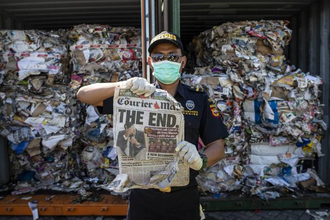
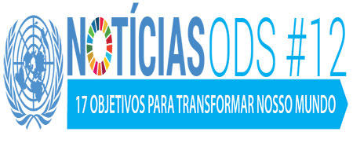
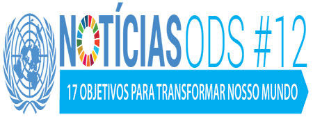

Comlurb
Coleta Seletiva Carioca: contatos, dias, horários e material educativo
O Rio de Janeiro é uma das poucas cidades brasileiras que tem um programa municipal de Coleta Seletiva que abrange quase toda a cidade. Desde que a Política Nacional de Resíduos Sólidos (PNRS) foi aprovada em 2010 e que a logística reversa
passou a ser encarada como uma política pública, a coleta seletiva carioca tem crescido exponencialmente.
Infelizmente esse crescimento demorou demais, se arrastando por muitos anos. A capital carioca perdeu tempo, dinheiro e oportunidades de geração de emprego e renda por conta da morosidade de sucessivos governos. Mas, por conta da Copa
do Mundo de 2014 e das Olimpíadas de 2016, o mundo não poderia vir ao Rio e descobrir que nossa coleta seletiva era medíocre. Prefeitura do Rio e BNDES investiram R$ 25 milhões na ampliação do serviço, mas o principal avanço foi a
mudança de mentalidade dos gestores públicos (ou apenas a aceitação) em relação à coleta diferenciada de recicláveis.
E assim a cidade segue ampliando os bairros atendidos pela coleta de recicláveis e cabe aos cariocas participar quando sua rua estiver na rota dos caminhões azuis da coleta seletiva. Todo o material coletado é destinado a cooperativas
cadastradas na COMLURB, o que significa que a iniciativa é uma parceria público privada alinhada à PNRS, no que se refere à inclusão de catadores no processo de coleta seletiva.
Há muito para se melhorar, o desafio é imenso e diário, mas quem vive hoje no Rio de Janeiro tem escolha. Pode ficar parado procurado desculpas para não separar os resíduos, reclamando pelas redes sociais ou participar, avaliar e cobrar
melhorias da prefeitura. O melhor do Rio de Janeiro é o carioca participativo que acredita na construção de uma cidade melhor.

Funcionário da alfandega na Indonésia segura jornal onde se lê 'O fim', em frente de contêineres de lixo importado - 19/09/2019 Juni Kriswanto/AFP
Indonésia devolve mais de 500 contêineres de lixo a seus países de origem
A Indonésia anunciou nesta quinta-feira, 19, que enviará de volta contêineres repletos de lixo para seus países de origem. As operações de envio dos rejeitos não respeitarem a legislação do país.
As autoridades alfandegarias de Jacarta, capital da Indonésia, intensificaram a fiscalização barrando, desde julho deste ano, 547 dos mais de 2.000 contêineres investigados nos quatros principais portos do país e multando três empresas
locais por importar resíduos que não condizem com a legislação vigente.
Muitos dos contêineres foram reenviados para a Austrália, outros foram devolvidos aos Estados Unidos, Nova Zelândia e países europeus, como Alemanha, França e Bélgica. As autoridades da Indonésia disseram que não querem que o país
se transforme no lixão do Ocidente.
Desde que a China decidiu parar de importar resíduos plásticos, em 2018, causando um caos no mercado global de reciclagem, os países exportadores de lixo tiveram de encontrar novos destinos para esse tipo de carga, o que gerou indignação
dos países do sudeste asiático.
 
